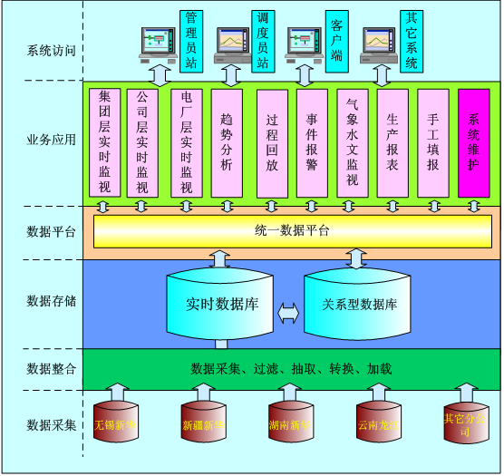

新华水力发电集团生产管理信息系统（以下简称“PMIS”）是以新华发电公司发展规划确定的管理为基础，配合集团体制、机制、管理和技术的持续创新，充分利用现代信息技术，建立和形成满足集团公司及其分子公司的协同运转、高效管理和科学决策需要的新华发电公司综合信息系统。
1、建立电厂运行实时数据采集平台。分析研究集团所属各类发电厂对电厂运行实时信息的需求情况和利用方法，建立一套集团统一的电厂运行指标体系标准，并依据该标准设计出数据库的主要数据结构，同时保留可扩充性。针对集团总部、区域分公司和各发电厂对实时数据需求的不同，按照统一的接口标准分别提取各自所需的关键指标数据，并进行长期存储和加工处理。
2、建立各级电厂运行实时监测系统。在集团公司本部，以抽取上来的各发电厂实时数据为基础，建设集团电厂运行实时监测系统，成为集团公司未来的生产监测指挥中心。在各区域分公司，以抽取上来的各发电厂实时数据为基础，建设区域分公司运行实时监测系统，成为区域分公司未来的运行监测指挥中心。在各发电厂，以建立的实时数据库为基础，建设运行实时监测系统。
3、为集团化生产调度提供所需信息。实现对各下属发电厂生产运营状况的在线监视，跟踪机组运行状态，反映其生产运营中发生的生产事故和有较大影响的紧急事件,并能通过系统实时向总公司报告；满足生产运营信息的收集、整理、汇总、分析及向集团公司上报的要求；分析所辖电厂机组运行的经济性，指导协调管辖电厂的生产运营和电力市场有关工作。
PMIS全面基于面向服务的体系架构（SOA）和N层B/S体系模式，自底向上分为基础设施层、数据层、基础应用层、业务应用层和表示层。采用分层的技术架构具有很强的扩展性、可维护性和安全性。
系统功能架构如下图所示：
